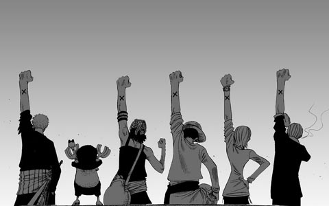

一起走过的日子
"大学毕业离校的前几天晚上，全班同学坐在女生楼下被戏称为"望春亭"的小亭子里。一箱啤酒，一地蜡烛。简陋的收录机放着被我们称为"巨俗"的流行歌曲，几乎每首大家都会唱，于是人手一瓶酒跟着唱，还大声地笑，却又好认真。 可是，毫无防备的，这首歌出现了。 老狼的嗓音最适合这类歌曲。他的音质本身就带了一种无从诉说的忧伤，录音机已很老旧，磁带沙沙转着的声音，给他的歌声又多添几分苍凉。 大家一下子都沉默了。还是跟着唱，但没有人再带着戏谑的表情，声音也低了下去。男生开始无言地互相碰瓶子，喝酒，大家互相安静拥抱……
"再看看其他人，女生在默默流泪，男生们还在继续碰瓶子，不多说什么。有一个男生抱着吉它，铮铮琮琮地和着那旋律。木吉它干净纯朴的音质像我们一起度过的时光。再灌自己一口酒，我终于无泪。"
"你说每当你回头看夕阳红，每当你又听到晚钟，从前的点点滴滴会涌起，在你来不及难过的心里……"
每到毕业离别之时，耳边总会淡淡地响起这熟悉的歌声，丝丝袅袅中煽动起我们心中那些沉睡已久的情感，让我们想起"睡在我寂寞的回忆"的兄弟，想起那些充满欢笑和哭泣的日子，想起那挤满了书的书架、旧暖瓶、黄色的木吉他、堆满床架的衣服鞋袜……从前的点点滴滴会涌起，而这一切一切，就如你那刻在墙上的字，依然清晰，从那时候起就没有人能擦去。